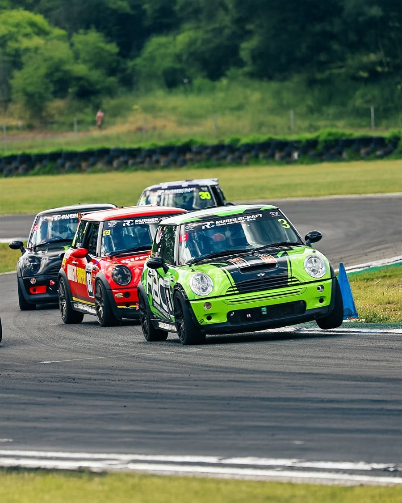

Home / About
Fun, competitive and budget-friendly motorsport — run by racers, for racers.
Who we are
The SuperMini Challenge Inc (SMC) is an Australian Motorsport–affiliated, QLD incorporated non-profit club, which commenced at the beginning of the 2022 season. The SMC is run by an elected, voluntary management committee made up of paid members, for the benefit of all competitors and all members.
Our primary focus is to promote an enjoyable and fun racing series at state and club level that provides competitive, budget-friendly motorsport — an entry level of competition that's properly regulated, but with pathways to more spirited competition within the club for those who want it.

Our mission
An annual championship featuring relatively low-cost, competitive, good-spirited racing — built to deliver real outcomes for drivers.
Build driving skill and race craft in a supportive environment.
Understand how to set the car up to optimise performance.
A welcoming community where mates race hard and have a great time.
Go racing at a reasonable, controlled cost.
Race in an environment that promotes camaraderie and learning.
An effective, transparent points system across the season.
The format
In 2026 the SuperMini Challenge runs across two championships — the Rubber Craft Australian Championship and the Rubber Craft Queensland State Championship — with eight rounds at Morgan Park, Queensland Raceway, Sydney Motorsport Park and The Bend. Each event has an organising body that sanctions and hosts the race meeting, and the SMC takes grid spots at each round listed on the calendar.
A series points system awards points at every round, and champions are crowned at the end of the season.
We also work to foster new talent — newcomers get support and assistance, and competitors are expected to show consideration toward them under race conditions.
See the calendarGet Involved
Whether you're brand new or returning to the track, there's a spot for you on the grid.